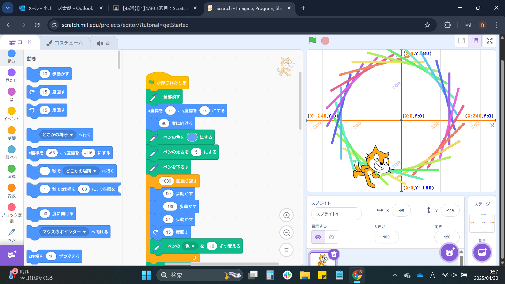
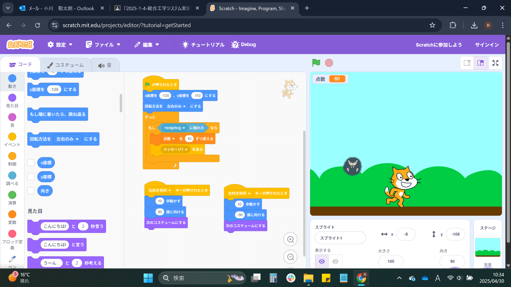

1週目のレポート ： 公大高専１年実習I-1
4a班12番 そら
第1週目
1-1 サイエンスアート

1.内容
イベントのブロックの後の順番がとても重要である。例えば「X座標と0Y座標を0にする」と「ペンを下す」の順番を逆にしてしまうと、移動した線が不自然に残ってしまうことがあげられる。
2.感想
上記のプログラムにおいて順番が重要であることについて、より複雑なプログラムになると順番一つで全く別の動きをしてしまうということに驚いた。人で考えると「リセット」という同じ動作に思えるからだ
1-2 ゲーム

1.内容
Scrachではプログラムをスプライトごとに入力し、そのスプライトに接触したか否かでゲームを成り立たせている。またスプライトのほかに、変数という情報を保存できる箱を設けることもできる。
2.感想
Scrachは視覚的かつ分かりやすくコードが組めることが面白く感じた。Scrachの裏で動いているコードが気になった。ブロックをドラック＆ドロップするのにもプログラムが使用されているからだ。
自分で考えた文章で作成する（50文字以上．100文字程度を推奨．※生成AIを使ってはいけない）
1-3 ホームページ作成
私のホームページ
1.内容
サイト上に表示されるものは＜＞と＜＞の間のみで＜＞の中の情報は間の文章を分類していることが分かった。＜＞で閉じるときは／を入れることは分かったが＜ｂｒ＞は閉じなくてよいのかわからない。
2.感想
普段ネット上で見えている情報はこのようにして作るのだと驚いた。ホームページを作る仕事があるくらいなのでもっと文字を１文字表示するだけでも難しいものだと思っていた。
各ページへのリンク
1週目のレポート
2週目のレポート
3週目のレポート
私のホームページ